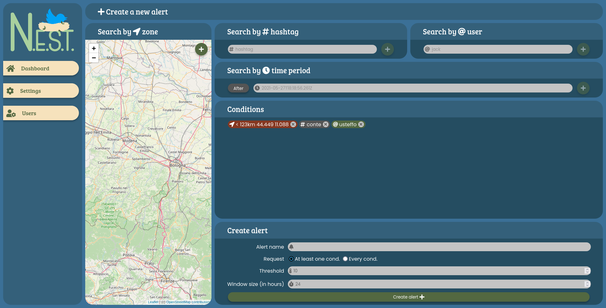
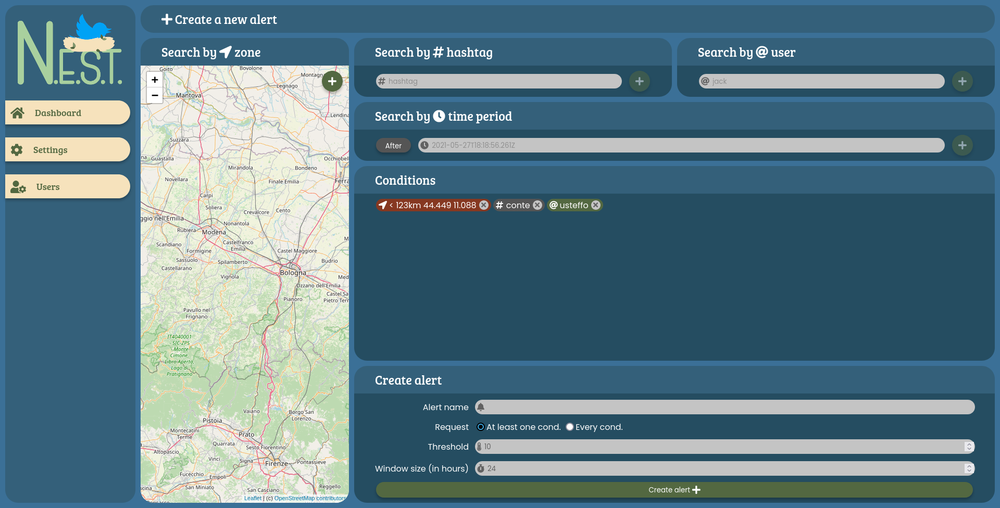

Il progetto in breve¶
N.E.S.T. (Noi Estraiamo Statistiche Tweet) è un progetto realizzato nel 2021 per l”esame di Progetto del Software del corso di Informatica all’Unimore.
Suddivisione in moduli¶
Il progetto è composto da tre parti:
nest_crawlerUn modulo scritto in Python usando
tweepyche recupera tweet attraverso la Twitter API secondo le condizioni presenti all’interno del database e li salva per future elaborazioni.nest_backendUn web server scritto in Python usando il framework
flaskche fornisce un’API HTTP per visualizzare e manipolare i dati dell’applicazione, gestendo autenticazione, autorizzazione e comunicazione con il database.nest_frontendUna applicazione web scritta in JSX usando il framework
reactche comunica con il backend, mostrando all’utente i dati del backend in una formato immediatamente comprensibile.


 
